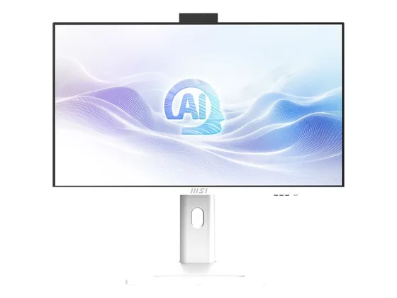

Asus V400 AiO : avis, tests et prix
Le verdict en une phrase. Un tout-en-un fin et sobre, en 24 ou 27 pouces, bien équipé en mémoire et en stockage dans ses versions Core 7.
N° 8 sur 10 dans le top 10 ordinateurs tout-en-un.

Pour qui ?
Vous voulez un tout-en-un fin et discret, bien doté en mémoire dans ses versions Core 7.
Vous attendez mieux que du Full HD, ou voulez vous appuyer sur de nombreux tests.
Le consensus de la presse
Le test recensé ne donne pas de note chiffrée : nous renvoyons vers l'article plutôt que d'inventer une note. Ces notes portent sur la gamme : configurations ou générations proches de celle vendue aujourd'hui.
Où l'acheter
La configuration peut différer d'un marchand à l'autre : vérifiez la fiche avant d'acheter. Seuls les liens Amazon sont affiliés à ce jour ; les autres sont de simples liens directs. Aucun n'influence les notes ni le classement.
Tous les tests recensés
Chaque ligne renvoie vers le test d'origine. Les notes sont converties sur 10 ; « test » signale un article sans note chiffrée. Notre méthode.
- All of the Abovetest
Source du relevé : Test All of the Above.
Les alternatives pour le même usage
Tout le top 10 → HP OmniStudio X 31,5"Un grand écran 4K de 31,5 pouces, le Wi-Fi 7 et un seul câble sur le bureau : l'alternative Windows à l'iMac.
N° 7 · Le 27 pouces abordable
HP OmniStudio X 31,5"Un grand écran 4K de 31,5 pouces, le Wi-Fi 7 et un seul câble sur le bureau : l'alternative Windows à l'iMac.
N° 7 · Le 27 pouces abordable
 HP OmniStudio 27"Un grand écran et un seul câble pour un budget contenu : suffisant pour la famille et la bureautique.
N° 9 · Le tout-en-un écran
HP OmniStudio 27"Un grand écran et un seul câble pour un budget contenu : suffisant pour la famille et la bureautique.
N° 9 · Le tout-en-un écran

MSI Modern AM273Q AIUn 27 pouces WQHD qui peut aussi servir d'écran pour un autre appareil : une polyvalence rare sur un tout-en-un.Questions fréquentes
Que pense la presse de l'ordinateur Asus V400 AiO ?
1 test presse recensé, sans note chiffrée. Un tout-en-un fin et sobre, en 24 ou 27 pouces, bien équipé en mémoire et en stockage dans ses versions Core 7.
Quels sont les points faibles relevés par les tests ?
Écran Full HD ; Peu de tests presse.
À qui s'adresse le modèle Asus V400 AiO ?
Vous voulez un tout-en-un fin et discret, bien doté en mémoire dans ses versions Core 7. À éviter si : vous attendez mieux que du Full HD, ou voulez vous appuyer sur de nombreux tests.
Où l'acheter, et à quel prix ?
Comptez environ 980 € (prix indicatif constaté en octobre 2026). Nous l'avons trouvé en vente chez Amazon et Darty. Les prix changent vite et la configuration peut différer d'un marchand à l'autre : seul le prix affiché par le marchand fait foi.